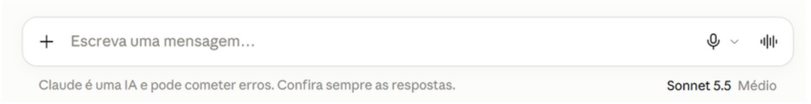
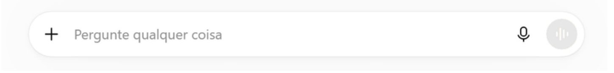
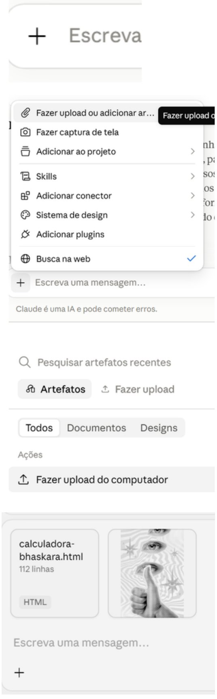
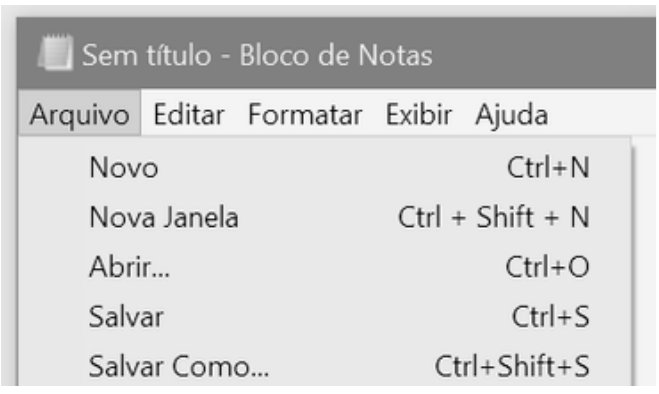
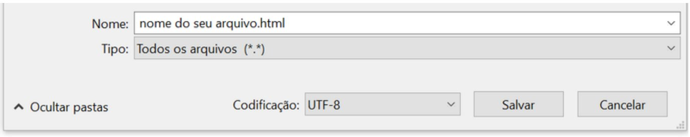

IA pra Prof: guia de IA para professores
Guia prático de Inteligência Artificial para educadores
E-book voltado para capacitação docente, planejamento pedagógico e integração ética da inteligência artificial na escola.
Dica: use Personalizar prompts no topo para preencher tema, ano e componente uma vez só. Todos os prompts do livro se ajustam sozinhos.
Série pra Prof: IA pra Prof · Tech pra Prof (ferramentas digitais) · Biblioteca de prompts (40 prompts por disciplina)
Apresentação
A Inteligência Artificial não foi criada para substituir o docente, mas para assumir tarefas mecânicas e operacionais do cotidiano escolar. Ela nada mais é do que um sistema computacional baseado no reconhecimento de padrões estatísticos em grandes volumes de dados (chamado popularmente de big data), que prevê a sequência textual mais provável (mas sem possuir consciência ou discernimento reais).
Seu valor reside na capacidade de atuar como apoio ao trabalho de planejamento, dependendo integralmente da orientação e da supervisão humana para produzir resultados.
A interação com estas ferramentas se baseia em conceitos simples: o prompt, que é a instrução ou comando fornecido ao sistema, e os tokens, que são as unidades mínimas de texto processadas pelo modelo. Falaremos mais disso durante o livro.
A eficácia da resposta gerada pela IA depende da clareza do pedido feito no prompt. É necessário ter contextualização, público-alvo e limites estabelecidos, cabendo ao usuário conduzir o processo. O domínio desta dinâmica permite transformar a tecnologia num recurso funcional para a elaboração de materiais didáticos e planos de aula sem exigir conhecimentos técnicos prévios.
Este livro apresenta orientações práticas para integrar a IA na rotina docente de forma produtiva, ética e segura. A premissa central é a preservação da autoria: a tecnologia sugere estruturas e conteúdos, mas a validação científica, o ajuste pedagógico e a decisão final pertencem em exclusivo ao professor. A leitura que se segue oferece as diretrizes necessárias para aplicar estas ferramentas com rigor, otimizando o tempo de trabalho sem comprometer a integridade do processo educativo.
Obrigada e boa leitura,
Júlia Roberta Quoos Alves
Conceitos introdutórios
A Inteligência Artificial não é um ser consciente nem possui intenções próprias. Trata-se de um sistema treinado com milhões de textos para reconhecer padrões de linguagem.
| O que a IA não é | O que a IA realmente é | O papel do professor |
|---|---|---|
| Não é um educador: não tem empatia, contexto de sala de aula nem julgamento ético. | Um sistema estatístico que reorganiza dados e gera esboços em poucos segundos. | Definir os objetivos pedagógicos e fazer a curadoria do conteúdo. |
| Não é uma fonte inquestionável: pode inventar regras, fontes ou competências com absoluta segurança. | Um assistente que gera texto a partir de instruções fornecidas. | Validar os fatos, links e códigos curriculares em documentos oficiais (por exemplo, na BNCC). |
| Não é autônoma: não substituiu o planejamento humano nem compreende as necessidades da turma. | Um acelerador de rascunhos para atividades, sequências e materiais de apoio. | Adaptar, cortar e decidir o que é viável para os seus alunos. |
Para utilizar a tecnologia com fluidez, o docente apenas precisa de dominar três noções fundamentais:
- Prompt: É o comando, pergunta ou orientação que escreve na janela da ferramenta. Quanto maior for a riqueza de detalhes, mais útil e precisa será a sugestão apresentada.
- Token: É a fração mínima em que o sistema subdivide o texto para calcular probabilidades (podendo corresponder a uma palavra, a uma sílaba ou a um grupo de caracteres). Os limites de leitura e de produção de resposta de cada plataforma são quantificados através de quotas de tokens.
- Janela de Contexto: Corresponde à memória da conversa ativa. A máquina considera as mensagens anteriores para responder às seguintes; se o diálogo se prolongar em demasia, o modelo pode esquecer instruções antigas, sendo preferível abrir uma nova conversa limpa.
Como uma resposta nasce
Toque em cada etapa.
Lei Geral de Proteção de Dados
Nunca insira dados pessoais identificáveis (identificadores): Nomes completos, fotos, números de matrícula, datas de nascimento, endereços ou contatos de estudantes e famílias jamais devem ser colados em ferramentas abertas.
Atenção redobrada aos dados sensíveis: Informações sobre saúde, diagnósticos de neurodivergência (como TEA ou TDAH), laudos psicopedagógicos, histórico comportamental e notas individuais exigem sigilo absoluto.
Ao pedir adaptações pedagógicas, substitua casos reais por personas fictícias (por exemplo: "Elabore uma atividade adaptada para um aluno hipotético de 10 anos com dificuldades de atenção").
Cuidado com uploads de arquivos: Evite enviar planilhas de turmas, atas de reuniões pedagógicas ou redações digitalizadas contendo cabeçalhos com nomes de alunos.
O que pode e o que nunca vai no prompt
Perfil da turma, sem nomes
Textos e exercícios propostos
Laudos, saúde, dados familiares
Notas e trabalhos identificáveis
Assim, o principal ponto de atenção para os educadores está na alimentação dos modelos de IA (prompts). Muitas plataformas públicas utilizam as entradas fornecidas pelos usuários para treinar novas versões do sistema. Isso significa que qualquer dado pessoal inserido pode se tornar parte da base de conhecimento da empresa desenvolvedora, escapando do controle pedagógico e violando a privacidade do estudante.
Pode ou nunca?
Esta informação pode ir no prompt?
Ética no uso de IA
Usar a IA com ética na escola significa assumir que a responsabilidade pelo que chega ao aluno continua sendo do professor. Isso envolve:
- ser transparente, avisando quando um material foi feito com apoio de IA e combinando regras claras com os estudantes;
- proteger a privacidade, anonimizando tudo e nunca expondo dados de alunos, em respeito à LGPD;
- manter a supervisão humana, conferindo conteúdo, fontes e vieses antes de usar e deixando avaliações e decisões pedagógicas com quem conhece a turma;
- pensar na equidade, lembrando que nem todos têm o mesmo acesso a internet, equipamentos e ferramentas.
Lembre-se: a IA pode agilizar o trabalho, mas a autoria, o olhar sensível e o julgamento seguem sendo do professor.
Viés algorítmico (Bias)
Como a IA reproduz desigualdades sociais, de gênero e raciais
A inteligência artificial não cria ideias do vácuo: ela reflete o espelho da internet com a qual foi alimentada. Se a sociedade possui desigualdades históricas, a IA tende a amplificá-las.
Principais vieses na IA
1. Viés Cultural e Geográfico
A imensa maioria dos dados de treino é oriunda do Norte Global (em língua inglesa). Conceitos, marcos históricos e referências do Brasil profundo, de comunidades tradicionais ou de culturas africanas e indígenas costumam ser marginalizados ou tratados de forma folclorizada.
2. Viés de Gênero e Profissões
Ao solicitar histórias infantis ou exemplos de carreiras, profissões de cuidado ou assistência frequentemente recebem pronomes femininos, enquanto cargos de liderança, exatas e poder recebem pronomes masculinos.
3. Invisibilidade e Estereótipos Regionais
O modelo tende a retratar determinadas regiões com estereótipos de escassez ou arcaísmo, desconsiderando a diversidade científica e cultural local.
Provocação pedagógica
Se você pedir para uma ferramenta de geração de imagens criar a ilustração de um "cientista brilhante", quase certamente ela desenhará um homem branco e idoso. Se pedir a imagem de "pessoa na limpeza", a probabilidade de gerar uma mulher negra é altíssima. Isso é viés algorítmico.
Intervenção ativa no prompt
Force o modelo a romper com o padrão confortável:
Crie uma narrativa contextualizada apresentando mulheres pioneiras na ciência brasileira.
Debate em aula: Mostre respostas enviesadas da IA para os estudantes e promova a reflexão: "Por que a ferramenta escolheu esses perfis? Quem produz o conteúdo da internet? Quem não está representado aqui?"
Detectores de IA e seus limites
Muitas escolas buscam softwares que prometem identificar "se o trabalho foi feito por inteligência artificial". Do ponto de vista técnico e pedagógico, não é recomendável reprovar ou punir estudantes com base em detectores de IA.
Por que os detectores falham?
- Funcionamento: Os detectores apenas medem o quão previsível é a escolha das palavras (perplexidade) e o grau de variação no tamanho das frases (explosão). Eles não "rastreiam" a IA: apenas julgam se o texto parece mecanizado.
- Altíssima taxa de falsos positivos: Textos escritos por pessoas neurodivergentes, estudantes que escrevem de forma direta e formal, ou alunos com repertório vocabular mais enxuto são frequentemente rotulados como "gerados por IA" por engano.
- Burlar é trivial: Basta o estudante pedir para a IA "reescreva com vocabulário informal e inclua um erro de digitação" para o detector zerar a probabilidade de máquina.
O que fazer em vez de usar detectores?
- Avalie o processo, não a entrega: Peça rascunhos, etapas prévias, mapas mentais feitos em sala e justificativas de pesquisa.
- Defesa oral rápida: Reserve 2 minutos para o aluno explicar individualmente: "O que significa esse termo do seu 3º parágrafo? Como você chegou a essa conclusão?"
- Adote a política de transparência: Ensine o aluno a citar o uso: "Pesquisei ideias na ferramenta X e elaborei o texto com minhas próprias palavras".
Riscos
A IA pode errar com muita convicção, inventando informações, fontes e códigos da BNCC. Por isso, nada do que ela gera deve ser usado sem conferência.
Há também o risco de expor dados de alunos, como nomes, laudos e trabalhos identificáveis, o que contraria a LGPD e exige tornar anônimo tudo antes de colar em qualquer ferramenta.
Do ponto de vista pedagógico, aceitar o rascunho pronto afasta o professor das decisões que lhe cabem, e o uso sem critério pelos alunos pode estimular a cópia e reduzir o esforço de pensar. Por isso, a IA deve ser tratada como apoio: ela propõe e o professor confere, ajusta e decide.
Risco → como evitar
Toque em cada risco para ver como evitar.
Quer conferir o que ficou? Faça o teste rápido sobre os fundamentos.
Teste rápido
6 perguntas sobre os fundamentos
Prompts: o que são e como fazer bem feito?
Prompt é a instrução ou pergunta que você escreve para a IA.
A qualidade da resposta depende muito da qualidade do prompt. É necessário:
- dar contexto (quem a IA deve ser, para qual ano e turma)
- trazer um comando claro (o que fazer, com verbo e objetivo)
- definir o formato (tabela, tópicos, tempo, linguagem)
- estabelecer limites (como "não invente fontes").
Como a primeira resposta é sempre um rascunho, faça o ciclo de refinar: peça ajustes pontuais, como "mais curto", "outro exemplo" ou "nível mais simples", em vez de recomeçar do zero.
(Relembre: nunca inclua dados pessoais de alunos e confira o resultado antes de usar.)
Onde são inseridos os prompts (perguntas)


Superdicas
8 dicas que melhoram qualquer prompt
- Conte o contexto. Quanto mais a IA sabe da sua turma, menos genérica é a resposta.
- Peça em etapas. Primeiro o esqueleto em tópicos, depois o desenvolvimento.
- Deixe a IA te entrevistar. "Faça 3 perguntas sobre minha turma antes de começar."
- Itere. O primeiro resultado é rascunho: "mais curto", "outro exemplo", "nível mais simples".
- Mande ela se auditar. "Aponte ambiguidades e o que pode estar errado nesta resposta."
- Peça versões. Duas ou três opções (formal, neutra, acolhedora) para você escolher.
- Mostre um modelo. Cole um documento da sua escola e diga: "siga esta estrutura e este estilo".
- Proteja os dados. Nunca cole nomes, laudos ou informações sensíveis de alunos. Anonimize antes.
A fórmula P.A.C.T.O.
- Papel: quem a IA deve ser ("Atue como coordenador pedagógico experiente")
- Alvo: ano, tamanho da turma, realidade da escola
- Comando: a tarefa, com verbo claro (crie, reescreva, compare, resuma)
- Tom e formato: tabela, tópicos, tempo por etapa, linguagem para a idade dos alunos
- Observações: restrições e o que evitar ("não invente fatos", "sem internet na sala")
Monte seu prompt com a P.A.C.T.O.
Preencha o que quiser; o prompt aparece pronto para copiar.
[Checklist]
Prompts prontos
Cole, adapte e use. O rascunho é da IA; a decisão é sua.
Crie uma sequência de 4 aulas de 50 min sobre [tema] para o [ano], com objetivo, atividade de abertura, desenvolvimento e fechamento. Formato: tabela.
Crie 8 questões de múltipla escolha sobre [tema]. Os distratores devem refletir erros comuns. Depois revise como um aluno atento e aponte ambiguidades.
Escreva um feedback para esta resposta: 1 ponto forte, 1 ponto a melhorar, 1 próximo passo. Tom encorajador, linguagem para [idade].
Transforme estas anotações em um parecer descritivo de 1 parágrafo, tom formal e positivo. Não invente fatos além das anotações.
Reescreva esta mensagem para um responsável preocupado. Tom acolhedor, sem culpabilizar, com um encaminhamento concreto. Máximo de 5 linhas.
Adapte este texto para um aluno com dificuldade de leitura: frases curtas, vocabulário simples e glossário no fim, mantendo o objetivo [X].
Crie o roteiro de 10 slides sobre [tema]: título, 3 tópicos curtos, sugestão de imagem e fala de apoio para o professor.
Estes são os prompts de uso geral. Para prompts por disciplina e etapa, da Educação Infantil ao ensino médio, use a biblioteca de prompts para professores: são 40 prompts prontos, todos na fórmula P.A.C.T.O. e com botão para copiar.
Metodologias ativas
Metodologias ativas são abordagens de ensino em que o aluno participa do processo de aprendizagem: pesquisa, discute, resolve problemas e produz, em vez de apenas ouvir e copiar. O professor deixa de ser o único transmissor de conteúdo e passa a planejar, mediar e orientar as experiências de aprendizagem.
A ideia central é que se aprende melhor fazendo, e não apenas recebendo informação. Isso tem raízes em autores como John Dewey, Paulo Freire e Lev Vygotsky, e dialoga com a BNCC, que valoriza o protagonismo do estudante e o desenvolvimento de competências, não só a memorização de conteúdos.
| Tradicional | Metodologias ativas | |
|---|---|---|
| Papel do aluno | Ouvinte, receptor | Protagonista, participante |
| Papel do professor | Transmite o conteúdo | Planeja e media |
| Foco | Conteúdo | Competências e resolução de problemas |
| Avaliação | Prova no final | Acompanhamento contínuo |
| Ritmo | Igual para todos | Mais espaço para ritmos diferentes |
Aprendizagem por projetos, sala invertida e rotação
Aluno: protagonista
Proponha um projeto de 3 semanas em que alunos do [ano] investiguem [problema real da comunidade] e apresentem uma solução. Inclua marcos semanais, produtos entregues e critérios de avaliação.
Planeje uma aula invertida sobre [tema]: o que os alunos estudam em casa (15 min, com material simples e sem depender de internet rápida) e quais atividades fazemos em sala para aplicar e tirar dúvidas.
Organize uma rotação com 3 estações de 15 min sobre [tema]: uma com ação do professor, uma colaborativa e uma individual. Descreva materiais, instruções para cada estação e como organizar os grupos.
Transforme esta sequência em uma missão com fases, pontos por conquista e um desafio final. Evite competição que exponha quem tem mais dificuldade.
Planos de aula
O plano de aula organiza o que será ensinado, como e em quanto tempo.
A IA acelera a montagem do rascunho, a criação de variações e a adaptação para turmas diferentes. Quem define o objetivo, escolhe o caminho e ajusta à realidade da sala é o professor. Um bom plano responde a quatro perguntas:
- para que (objetivo),
- o quê (conteúdo),
- como (atividades)
- como saberei (avaliação).
Passo a passo
- Reuna o contexto: ano, turma, tempo de aula, recursos e o que a turma já viu.
- Defina o objetivo: com verbo observável, como identificar, comparar, resolver ou produzir.
- Peça o rascunho com a fórmula P.A.C.T.O. e o tempo de cada etapa.
- Faça a curadoria: confira conteúdo, tempo, materiais e códigos da BNCC; ajuste ao seu estilo.
- Refine: peça mudanças pontuais, um plano B e adaptações para quem precisa.
Prompts para testar
Sugira um objetivo de aprendizagem e as habilidades da BNCC relacionadas ao tema [tema] para o [ano] de [componente]. Para cada habilidade, indique o código e avise quando não tiver certeza dele, para eu conferir no documento oficial.
Transforme este plano em uma aula de rotação por estações com 3 estações de 15 minutos: uma com o professor, uma colaborativa e uma individual. Descreva materiais, instruções para cada estação e como organizar os grupos. Plano: [cole aqui].
Inclua neste plano uma avaliação formativa: 3 perguntas rápidas de verificação durante a aula e um bilhete de saída para o final. Indique o que cada resposta revela sobre a compreensão dos alunos.
Adicionando modelos de plano de aula
ou outros anexos
- Use o seu modelo de plano de aula em Word (.docx), PDF ou planilha. Se puder, deixe os campos bem identificados, como "Tema:", "Objetivo:", "Tempo:" e "Avaliação:". Quanto mais claro o modelo, melhor a IA o preenche. Apague dados pessoais antes de enviar, como nomes de alunos.
- Na caixa onde você escreve, clique no símbolo de clipe ou de "+" e escolha o arquivo no seu computador ou celular. Você também pode arrastar o arquivo para dentro da janela da conversa. Espere o nome do arquivo aparecer antes de enviar.
- Diga o que preencher e com quais informações: tema, ano, tempo de aula, recursos e objetivo. Peça para manter a estrutura, os títulos e a ordem do modelo, e para não inventar informações.
- Peça que a IA entregue o modelo preenchido em um arquivo para baixar, no mesmo formato (por exemplo, Word). Se o recurso de criar arquivos estiver ligado nas suas configurações, o arquivo aparece para download no chat. Se não estiver, peça o texto de cada campo e cole você mesma no seu modelo.
- Abra o arquivo, confira conteúdo, tempo e códigos da BNCC, e ajuste ao seu estilo. Para mudar algo, escreva no chat ("reduza a atividade 2 para 10 minutos") e a IA atualiza o arquivo. Salve a versão final com o nome da aula.

Preencha o modelo de plano de aula anexado com: tema [tema], [ano], tempo de aula [tempo], recursos [recursos] e objetivo [objetivo]. Mantenha a estrutura, os títulos e a ordem do modelo e não invente informações. Entregue o modelo preenchido em um arquivo Word para baixar.
Materiais didáticos
Material didático é tudo o que apoia a aprendizagem além da fala do professor.
A IA ajuda a criar a primeira versão e a gerar variações de formato com rapidez.
Prompts para testar
Crie o roteiro de um deck de 10 slides sobre [tema] para o [ano]. Para cada slide: título, 3 tópicos curtos, sugestão de imagem e uma fala de apoio para o professor. Linguagem simples e uma ideia por slide.
Crie um guia de estudo de 1 página sobre [tema] para o [ano], com resumo em tópicos, 5 termos-chave com definição, 3 exemplos do dia a dia e 5 perguntas de revisão. Use o conteúdo abaixo como base: [cole aqui].
Gere um mapa conceitual em lista hierárquica (conceito central, ramos e exemplos) sobre [tema]. Indique em cada ligação a relação entre os conceitos, como 'causa', 'faz parte de' ou 'exemplo de'.
Crie 15 flashcards sobre [tema] para o [ano], em tabela com 'frente' (pergunta ou termo) e 'verso' (resposta curta). Misture níveis de dificuldade e evite respostas ambíguas.
Explique [conceito] para alunos do [ano] em até 150 palavras, com uma analogia ligada a [interesse dos alunos: futebol, jogos, culinária]. Depois, liste os dois erros de compreensão mais comuns sobre o tema.
Escreva o roteiro de um vídeo de 3 minutos sobre [tema] para alunos do [ano], com abertura que desperte curiosidade, 3 blocos de conteúdo, uma pergunta de reflexão e o texto da fala do professor.
Adapte o material abaixo para alunos com baixa visão ou dificuldade de leitura: texto em linguagem mais simples, estrutura em tópicos curtos e uma descrição em texto de cada imagem ou gráfico. Material: [cole aqui].
Materiais interativos
Passo a passo para criar seus próprios jogos, sites, flash cards e o que mais a imaginação permitir.
- Escreva o prompt pedindo "um único arquivo HTML". A IA vai responder com um bloco de código. Clique em "Copiar" no canto do bloco, ou selecione tudo, do começo ao fim, e use Ctrl+C.
- No Windows, abra o Bloco de Notas (digite "bloco de notas" no menu Iniciar).
- Clique na área em branco e use Ctrl+V. O texto vai parecer um monte de símbolos, e isso é normal.
- Vá em Arquivo > Salvar como.

- No nome, escreva algo como quiz-fracoes.html, com o .html no final. No Windows, em "Tipo", escolha "Todos os arquivos" e em "Codificação" escolha UTF-8, para os acentos aparecerem certos. Salve em um lugar fácil de achar.

- Encontre o arquivo salvo e dê dois cliques. Ele abre no Chrome, Edge, Firefox ou Safari. Se abrir em outro programa, clique com o botão direito > Abrir com > escolha o navegador.
Dica geral: peça sempre um único arquivo HTML, que funciona sem instalar nada e até sem internet. Dá para abrir no navegador, no celular e no laboratório da escola.
Se algo der errado
O arquivo abre como texto, e não como página
O nome ficou terminando em .txt. Salve de novo com "Todos os arquivos" e confira o .html no final.
Os acentos aparecem estranhos (como "ç")
Salve de novo com codificação UTF-8.
Nada acontece ao clicar nos botões
Provavelmente faltou copiar o final do código. Volte à IA, copie o bloco inteiro e substitua.
No celular
Envie o arquivo pelo WhatsApp ou Drive e abra pelo navegador do aparelho. Alguns celulares abrem arquivos HTML melhor depois de baixados.
Ainda com dificuldades? Clique aqui para acessar nosso tutorial em vídeo.
Confira também
Prompts para testar
Materiais interativos em HTML
Crie um quiz interativo em HTML sobre [tema] para o [ano], com 8 questões de múltipla escolha. Mostre se a resposta está certa ou errada na hora, com uma explicação curta, e no final exiba a pontuação e os temas para revisar. Arquivo único, funcionando offline, sem pedir nome nem coletar dados.
Crie um simulador interativo sobre [conceito, como movimento, juros, ecossistema ou frações] para alunos do [ano]. Inclua controles (barras e botões) para o aluno alterar os valores e ver o resultado mudar na tela, com um texto curto explicando o que está acontecendo.
Crie um jogo da memória em HTML com 12 pares de cartas sobre [tema], associando termo e definição. Conte as tentativas, mostre o tempo e dê uma mensagem de parabéns no final. Cores com bom contraste e botões grandes, para uso no celular.
Crie uma linha do tempo interativa sobre [período ou tema], com 8 eventos. Ao clicar em cada evento, mostre uma data, uma explicação em até 3 linhas e uma pergunta de reflexão. Não use imagens externas.
Crie uma trilha de aprendizagem em HTML sobre [tema], com 4 fases de dificuldade crescente. Cada fase tem uma explicação curta e 3 desafios, e só libera a próxima quando o aluno acerta. Mostre uma barra de progresso. Linguagem simples e tom motivador.
Crie um escape room digital sobre [tema] para o [ano], com 4 salas. Em cada sala, o aluno resolve um enigma ligado ao conteúdo para obter uma senha e abrir a próxima. Inclua dicas opcionais e uma tela final de vitória. Arquivo único em HTML.
Crie uma página de flashcards sobre [tema] com 15 cartas. O aluno vira a carta para ver a resposta e marca 'acertei' ou 'preciso rever'. Ao final, mostre quais cartas ficaram para revisar. Sem login e sem salvar dados pessoais.
Crie um site simples de uma página para apresentar o projeto '[nome do projeto]' da turma do [ano], com título, objetivo, etapas, resultados e uma seção 'o que aprendemos'. Layout limpo, responsivo para celular e com bom contraste. Use textos e nomes fictícios onde eu indicar [ ].
Crie uma calculadora interativa para [uso, como média de notas, conversão de unidades ou orçamento de um projeto], para alunos do [ano]. Mostre o passo a passo do cálculo, e não só o resultado, para o aluno entender como se chega nele.
Crie um esquema interativo de [corpo humano, sistema solar, regiões do Brasil ou célula]. Ao clicar em cada parte, mostre o nome, uma função ou característica e uma curiosidade. Desenhe com formas simples, sem imagens externas.
Exemplos criados com esses prompts
Exercícios
Exercício não é só lista de questões. Uma boa atividade pode ser uma investigação, um estudo de caso, um jogo, um debate ou uma produção.
A IA ajuda a criar muitas versões em pouco tempo, mas quem decide o objetivo, o nível e o formato é o professor.
Ideias de exercícios (para fugir do óbvio)
- Jogos de perguntas e respostas
- Escape room pedagógico
- Caça ao tesouro de conceitos
- Estudos de caso
- Júri simulado
Formulação, situações-problema e dificuldade
- Defina o objetivo: o que o aluno deve ser capaz de fazer ao final.
- Contextualize: peça situações-problema ligadas à realidade da turma (cidade, profissões, cotidiano).
- Escolha a dificuldade: básico, intermediário e desafio, sobre a mesma habilidade.
- Peça o gabarito resolvido e confira cada resposta por conta própria.
- Revise e adapte: corte, troque exemplos e ajuste ao tempo de aula.
Prompts para testar
Crie uma dinâmica em grupo de 30 minutos sobre [tema] para uma turma de 30 alunos, em grupos de 5, com papéis definidos (leitor, anotador, conferente, porta-voz e cronometrista), materiais simples e um critério de avaliação da colaboração.
Crie um jogo de perguntas e respostas com 12 cartas sobre [tema], com pontuação diferente por nível de dificuldade, regras em até 5 linhas e uma carta-surpresa que exija trabalho em equipe.
Adapte esta atividade para alunos com dificuldade de leitura: frases curtas, vocabulário simples e glossário no final, mantendo o objetivo [X]. Em seguida, crie uma versão de aprofundamento para quem termina antes. Atividade: [cole aqui].
Atividades para início do letramento digital
Atividade 1: "O tribunal da máquina" (caça aos erros)
Como aplicar: O professor gera um texto intencionalmente impreciso sobre o conteúdo de aula usando a IA.
Comando para os alunos: "A IA gerou esta explicação histórica/científica com 3 informações falsas e 1 fonte inventada. Em duplas e usando os livros didáticos da biblioteca, identifiquem os 4 erros e reescrevam o texto corrigido."
Objetivo: Demonstrar que o texto da IA parece verdadeiro, mas requer checagem bibliográfica rigorosa.
Escreva uma explicação de 2 parágrafos sobre [tema] para alunos do [ano] contendo, de propósito, 3 informações falsas e 1 fonte inventada. Depois, em separado, liste os 4 erros e a correção de cada um, para eu usar como gabarito.
Atividade 2: "Rastreando as fontes reais"
Como aplicar: Peça que os alunos façam uma pesquisa temática em uma IA (como Perplexity ou ChatGPT) solicitando links e autores.
Comando para os alunos: "Abram cada link citado pela ferramenta. O autor existe? O estudo diz exatamente o que a IA afirmou ou ela distorceu a conclusão?"
Objetivo: Desenvolver o hábito de nunca citar terceiros sem checar a fonte primária.
Atividade 3: A regra do semáforo na sala de aula
Definir visualmente (para cada projeto) o nível de intervenção permitido da IA. Toque em cada luz:
Facilitando o AEE
A IA é uma ferramenta poderosa para o Atendimento Educacional Especializado (AEE) e para o Desenho Universal para a Aprendizagem (DUA), desde que respeitada a regra de ouro: NUNCA insira nomes de alunos, diagnósticos nominais ou laudos médicos. Trabalhe sempre com barreiras de aprendizagem e personas fictícias.
Caso 1: Aluno com TDAH
Barreira: sobrecarga visual e foco executivo
O objetivo não é reduzir o conteúdo conceitual, mas fracionar a execução da tarefa.
Adapte a lista de 5 exercícios abaixo para um estudante hipotético de 12 anos com déficit de atenção e baixa tolerância à sobrecarga textual: 1. Destaque em negrito os verbos de comando de cada questão (ex: calcule, compare). 2. Divida problemas longos em caixas de 'Passo 1' e 'Passo 2'. 3. Elimine enunciados prolixos e use frases diretas de até 12 palavras. Exercícios: [cole aqui].
Caso 2: Estudante autista / TEA
Barreira: linguagem figurada e abstração
O foco é conferir previsibilidade, clareza literal e suporte visual.
Reescreva a seguinte situação-problema de matemática para um estudante com necessidade de linguagem direta e literal: 1. Elimine metáforas, gírias e ironias. 2. Adicione uma rotina visual em tópicos numerados indicando o que deve ser feito primeiro, segundo e por último. 3. Sugira uma representação em desenho ou esquema concreto para acompanhar o texto. Texto original: [cole aqui].
Caso 3: Dificuldade de decodificação / baixa visão
Adapte este texto de história para acessibilidade de leitura: 1. Parágrafos curtos (máximo 3 linhas). 2. Substitua palavras de baixa frequência por termos cotidianos equivalentes. 3. Inclua um mini-glossário com 3 palavras-chave ao final. 4. Descreva em uma frase objetiva o que a imagem de apoio deve ilustrar. Texto: [cole aqui].
Gestão e comunicação escolar empática
Passo a passo
Defina o objetivo: informar, convidar, pedir uma ação, acolher ou resolver um conflito.
Conheça o público: aluno, responsável, coordenação ou comunidade, e o canal (WhatsApp, e-mail, bilhete, mural).
Escreva os fatos primeiro: reuna as informações, sem dados desnecessários, e peça que a IA estruture e ajuste o tom.
Revise com empatia: leia como se fosse quem recebe. Peça à IA para apontar trechos que podem soar duros ou ser mal interpretados.
Personalize e envie você mesma: mensagens sobre casos individuais precisam do seu olhar antes de sair.
Riscos
Tom frio ou genérico: mensagens com cara de modelo pronto podem soar impessoais, sobretudo em momentos delicados.
Informação inventada: em atas e pareceres, a IA pode acrescentar fatos que não aconteceram. Peça sempre "não invente informações".
Julgamentos disfarçados: rotular o aluno ou a família, mesmo com palavras polidas, afasta em vez de aproximar.
Exposição de terceiros: citar outros alunos ou famílias em mensagens individuais.
Linguagem técnica demais: termos pedagógicos dificultam a compreensão das famílias.
Prompts para comunicados, atas e pareceres
Reescreva esta mensagem para um responsável preocupado com as notas do filho. Tom acolhedor e objetivo, sem culpabilizar, com um encaminhamento concreto. Máximo de 5 linhas, formato WhatsApp. Mensagem: [cole aqui, sem nomes].
Escreva esta mensagem em 3 versões: formal, neutra e acolhedora. Ao final, indique em qual situação cada uma funciona melhor. Conteúdo: [fatos].
Leia o texto abaixo como se fosse um responsável que o recebe. Aponte trechos que podem soar agressivos, acusatórios ou ser mal interpretados e sugira reescritas mais empáticas. Texto: [cole aqui].
Escreva um convite curto e acolhedor para uma reunião de pais do [ano], dia [data], às [hora]. Explique em uma frase por que a presença é importante, sugira que avisem se não puderem vir e mantenha um tom de parceria.
Monte uma pauta para uma reunião de pais de 60 minutos, com os itens [lista], tempo para cada um, um momento de escuta das famílias e um fechamento com encaminhamentos.
Transforme estas anotações em um parágrafo de parecer descritivo, em linguagem formal e positiva, destacando avanços, dificuldades e próximos passos. Não invente fatos além das anotações. Anotações: [use iniciais, sem dados sensíveis].
Organize as anotações abaixo em uma ata no modelo [cole o modelo da escola]: data, participantes (por cargo), pauta, decisões e encaminhamentos com responsáveis e prazos. Não acrescente informações.
Preciso comunicar a uma família que houve um conflito entre dois alunos. Escreva uma mensagem que descreva o fato sem julgamentos, reconheça a preocupação da família, explique o que a escola já fez e convide para uma conversa presencial. Não cite nomes nem detalhes de outros alunos.
Referências
BRASIL. Ministério da Educação. Base Nacional Comum Curricular. Brasília: MEC, 2018. Disponível em: http://basenacionalcomum.mec.gov.br/. Acesso em: 23 out. 2026.
BRASIL. Lei nº 13.709, de 14 de agosto de 2018. Lei Geral de Proteção de Dados Pessoais (LGPD). Brasília, DF: Presidência da República, 2018. Disponível em: https://www.planalto.gov.br/ccivil_03/_ato2015-2018/2018/lei/l13709.htm. Acesso em: 23 out. 2026.
UNESCO. Guidance for generative AI in education and research. Paris: UNESCO, 2023. ISBN 978-92-3-100612-8. Disponível em: https://unesdoc.unesco.org/ark:/48223/pf0000386693. Acesso em: 23 out. 2026.
Glossário
Principais termos
Uso da IA pelos alunos
Toque em uma situação para ver o que fazer e um exemplo prático.
Assistentes de uso geral
Ferramentas para educação
Procurando ferramentas que não são de IA, como quizzes, murais, flashcards com Anki e recursos de acessibilidade? Veja o guia Tech pra Prof.
Sobre a autora
Júlia Roberta Quoos Alves une tecnologia e educação. No mestrado em Ciência da Computação, na Universidade Federal de Santa Maria (UFSM), desenvolveu uma pesquisa sobre inteligência artificial para auxiliar pessoas com deficiência visual, usando deep learning e visão computacional.
Licenciada em Informática e formada em Ciência da Computação, Administração e Marketing na UNISC, também tem quatro pós-graduações voltadas à educação: robótica educacional, tecnologias educacionais, gestão escolar e atendimento educacional especializado (AEE). Passou por experiências em engenharia de dados e em pesquisa em IA, e atua como professora de informática, além de ministrar oficinas de formação continuada para professores da rede municipal.
Roberta
Quoos
Alves
Júlia Roberta Quoos Alves @2026 IA pra Prof · ohtopico.com.br